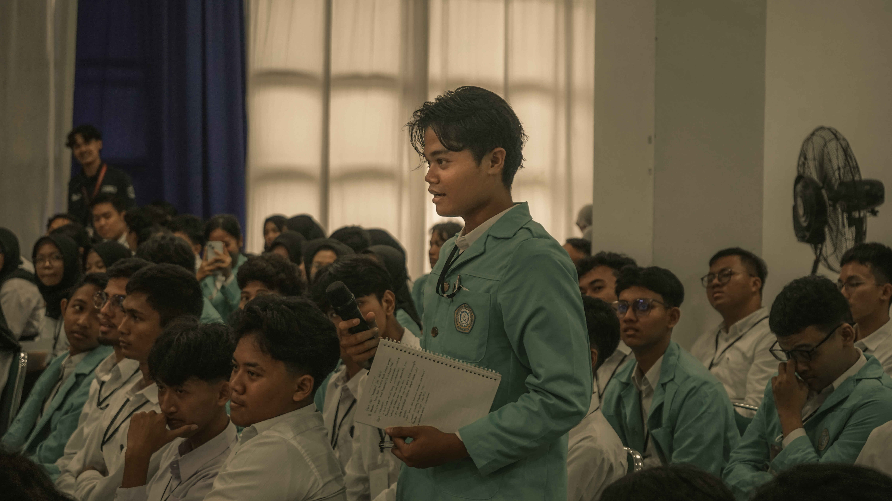

Curated Instagram Ecosystem
Pengelolaan konten visual, dokumentasi kreatif, serta kurasi media sosial lintas niche pada platform Instagram.

@refandiind_
Kreator Digital
⏳ Informatics stud | @fatisda_uns | @uns.official | "25
🎥 Photo, Video & Cinema etc
📍 Kebumen | Jawa Tengah 🇮🇩
Paskibraka Tingkat Kab. Kebumen
Recent Feed Layout Preview
Click post to expand
Other Curated Channels & Projects

@imakes_uns
Organisasi Komunitas
Ikatan Mahasiswa Kebumen-Solo
Universitas Sebelas Maret
Kabinet Cakra Abhipraya
@infokesma911 | @imakesday @imakesuns.roadtoschool |
@srambi_imakes
🎓 Kanal informasi untuk Mahasiswa Kebumen - Solo Universitas Sebelas Maret.
Kunjungi @imakes_uns
@imakesday
Komunitas
🐦🔥 IMAKES DAY 2026
👥 Ikatan Mahasiswa
Kebumen-Solo
🎓 Universitas Sebelas Maret
☀️
Kabinet Cakra Abhipraya
Part & Competition of :
@imakes_uns
🎬 Event tahunan IMAKES UNS dalam rangka untuk memperingati HUT IMAKES UNS.
Kunjungi @imakesday
@srambi_imakes
🧭 SRAMBI IMAKES 2026
👥 Ikatan Mahasiswa
Kebumen-Solo
🎓 Universitas Sebelas Maret
☀️
Kabinet Cakra Abhipraya
Part of @imakes_uns
🎬 Event untuk mempertemukan Mahasiswa Baru (UNS) asal Kebumen untuk menjadi wadah perkenalan awal antar mahasiswa baru, sehingga mereka dapat saling mengenal, membangun relasi.
Kunjungi @srambi_imakes
@bonjercampusfair
Organisasi Komunitas
🌀 Bonjer Campus Fair 2026/2027
🎓
Campus Expo SMAN 1 Karanganyar
📍 Kebumen, Jawa Tengah
🎬 Acara tahunan SMAN 1Karanganyar yang menjadi wadah siswa menggali informasi dunia perkuliahan dan jurusan melalui bimbingan alumni.
Kunjungi @bonjercampusfair
@pkkmbinformatikapsdku
Oficial Account PKKMB Informatika-PSDKU UNS 2026
Universitas
Sebelas Maret
Part of @uns.official @bemfatisdauns
Contact
Person: 081252281849 (Laely)
🎬 Pengelolaan acara Pengenalan Kehidupan Kampus Mahasiwa Baru Program Studi Informatika PSDKU Kebumen 2026 Universitas Sebelas Maret
Kunjungi @pkkmbinformatikapsdku
@inforpsdku_uns
Akun Resmi Informatika PSDKU Kebumen Universitas Sebelas
Maret
Fakultas Teknologi Informasi dan Sains Data
Est.
2024
🎬 Pengelolaan media informasi visual dari Program Studi Informatika PSDKU Kebumen Universitas Sebelas Maret
Kunjungi @inforpsdku_uns
.jpg.jpeg)